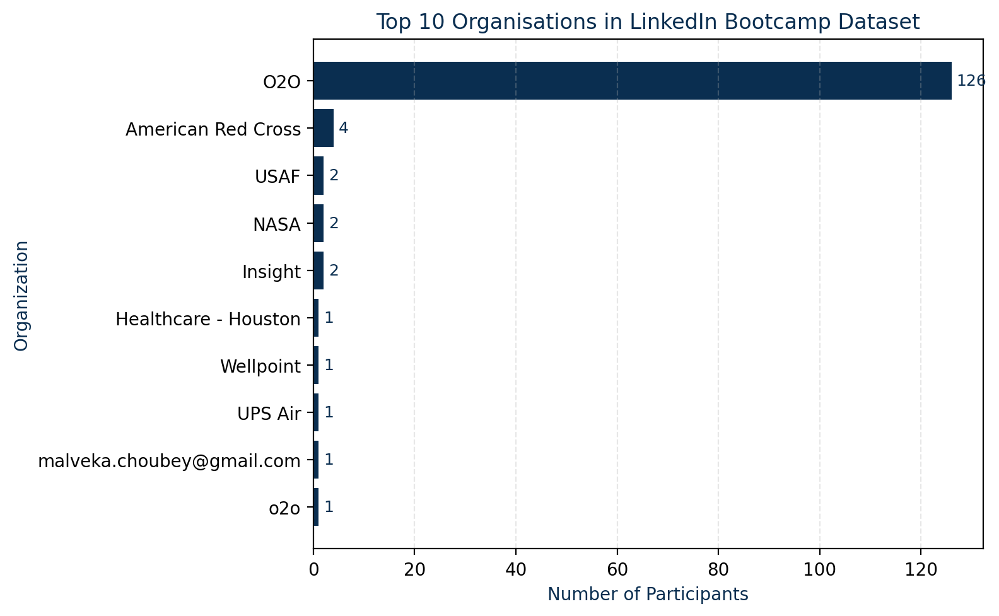

Data-Driven Impact

Bootcamp Dataset Insights
Extracted key trends from LinkedIn bootcamp participants: one platform clearly dominates participation, with notable representation from various nonprofits and public‑sector organisations.

Business Dataset Insights
A horizontal bar chart illustrates how one organisation commands a strong lead in our sample, with other players trailing far behind. Understanding these dominance patterns helps executives identify where strategic investments and analytics can deliver outsized returns.